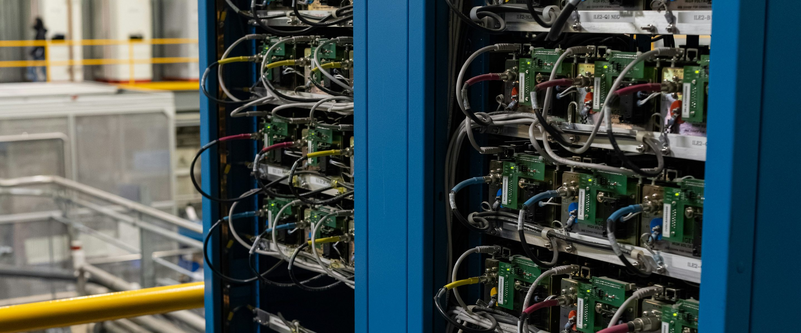
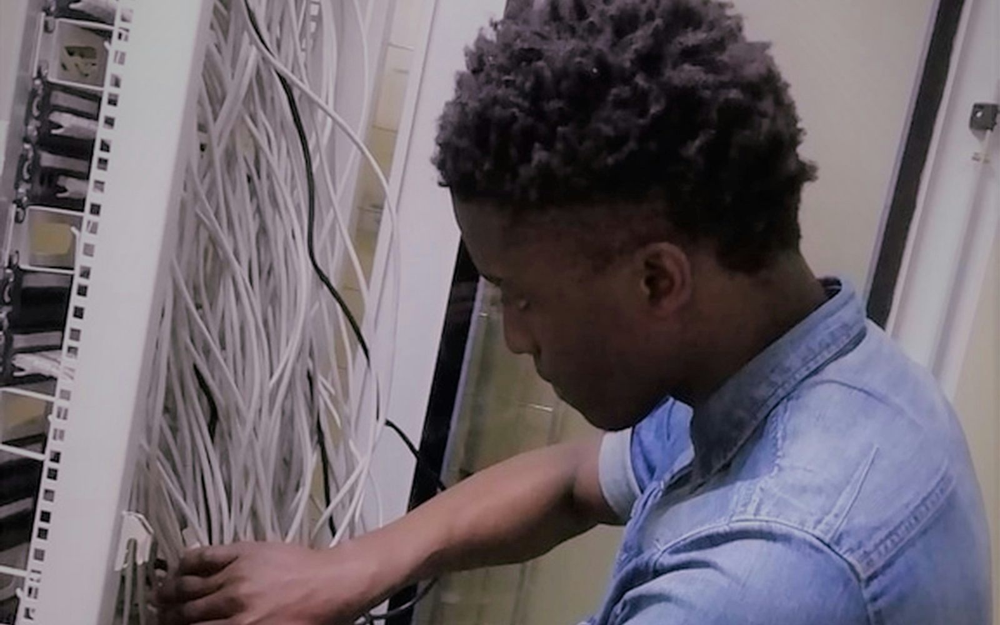

IN PLAIN ENGLISH
M&A & Migration Teams
Inherited environments rarely match the documents that come with them. RackTrack gives the team a practical starting point: capture the floor, compare it with the seller or legacy record, and identify what disagrees.
Migration plans fail when the starting point is wrong.
The team receives diagrams, exports, and handoff notes, but nobody is fully sure which devices are still installed or connected.
RackTrack captures the real cabinet.
RackTrack captures cabinets, labels, rack position, visible devices, ports, and cable context across the inherited footprint.
The team gets a record it can use.
The migration team can separate known equipment from unknown equipment and plan from the verified baseline.

WHAT THE TEAM SEES
Clear rack evidence, not another mystery report.
- A baseline of what is physically present.
- A clear list of record gaps and deltas.
- A better way to decide what to keep, move, replace, or retire.
DECISIONS MADE EASIER
A clearer inherited data center footprint.
Start with one inherited row and turn uncertainty into a migration baseline.

What was inheritedANSWERED
What disagrees with the recordANSWERED
What should move firstANSWERED
START SMALL